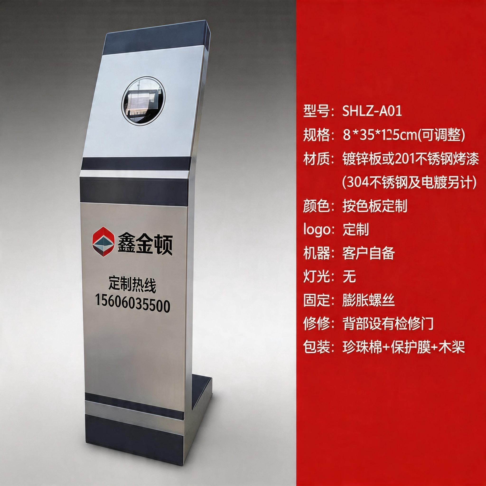
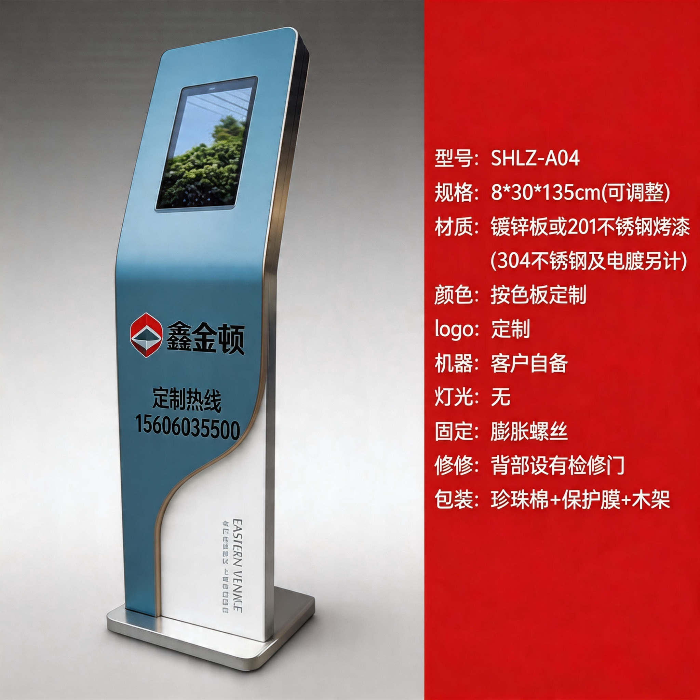
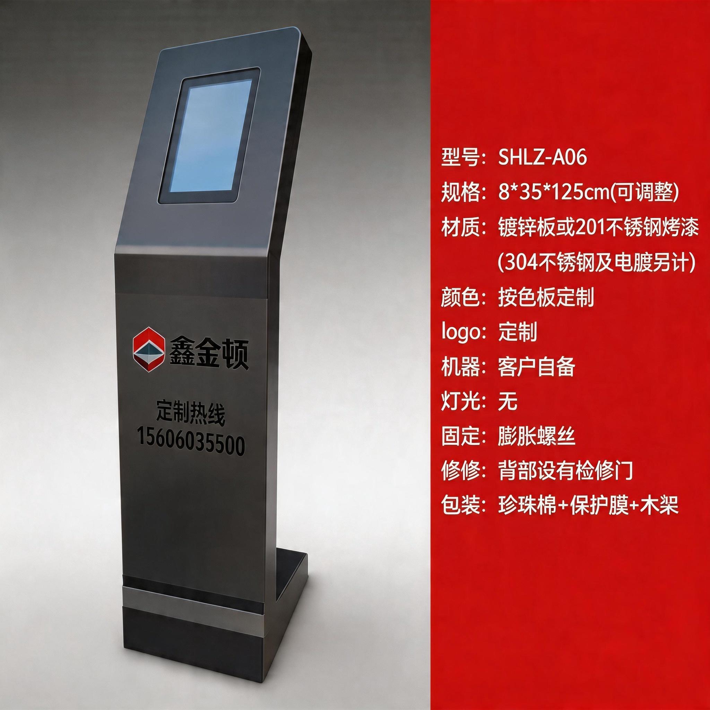
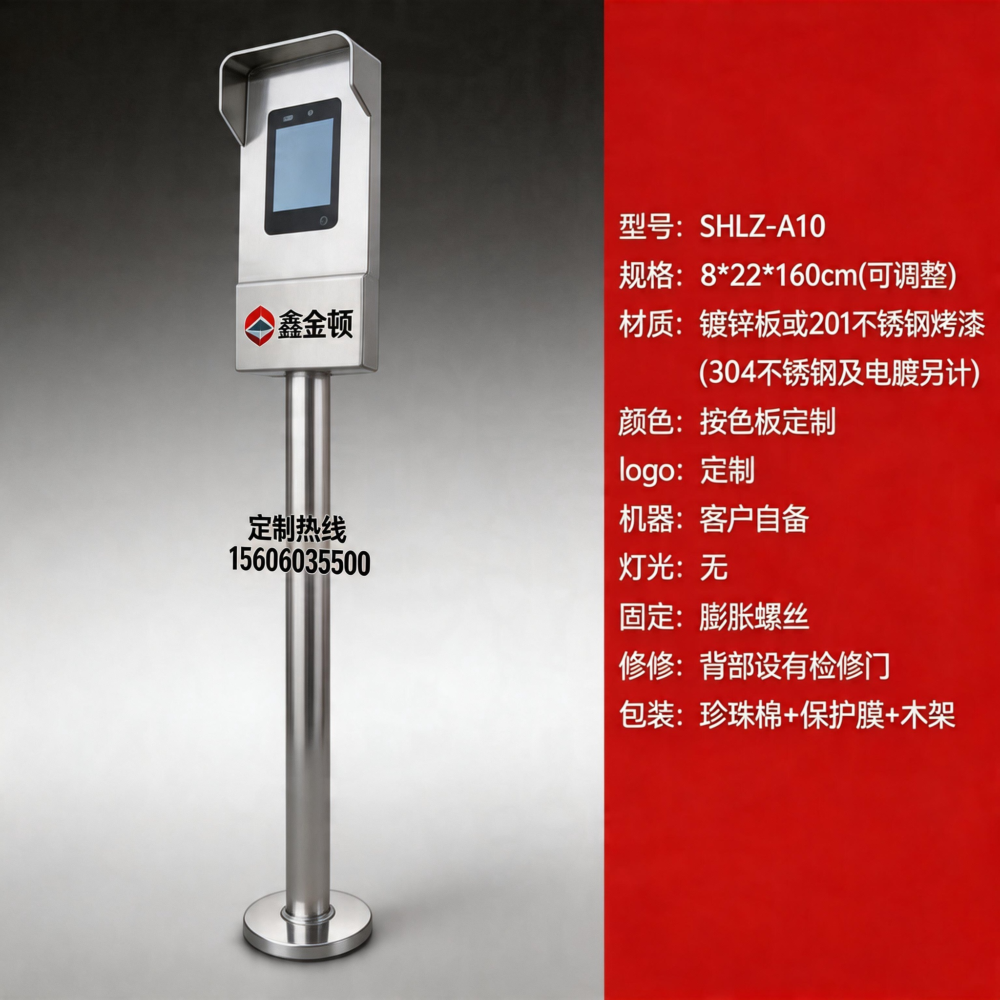
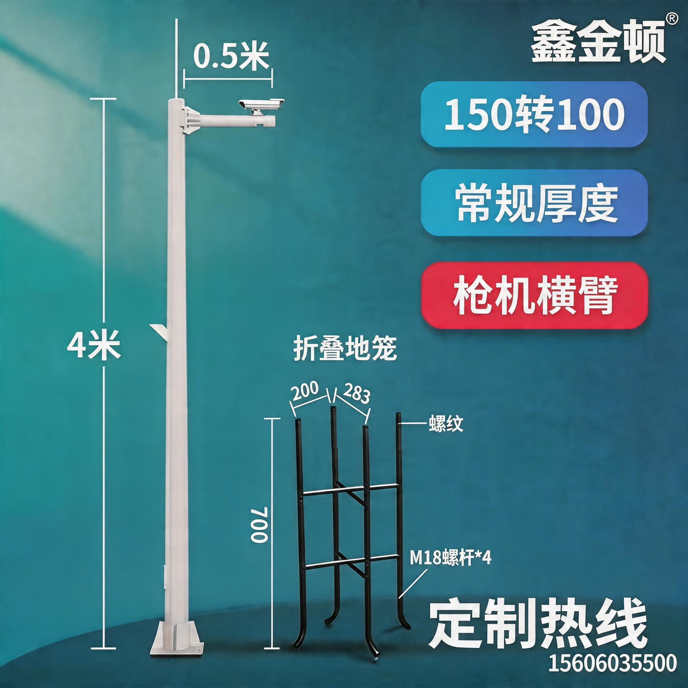
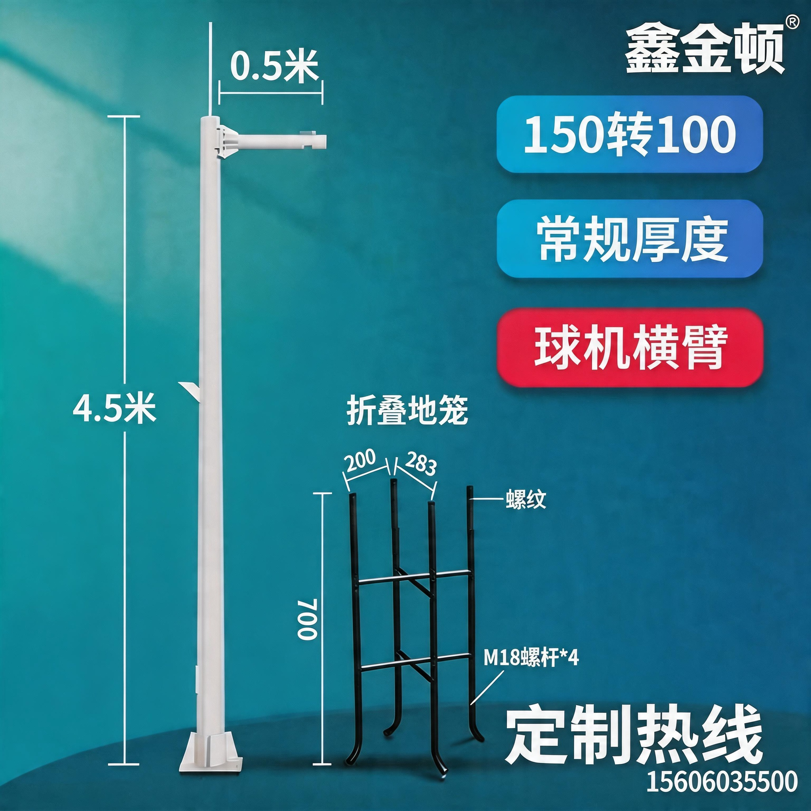
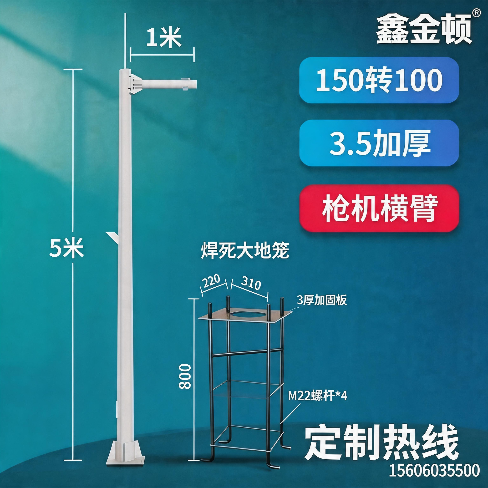
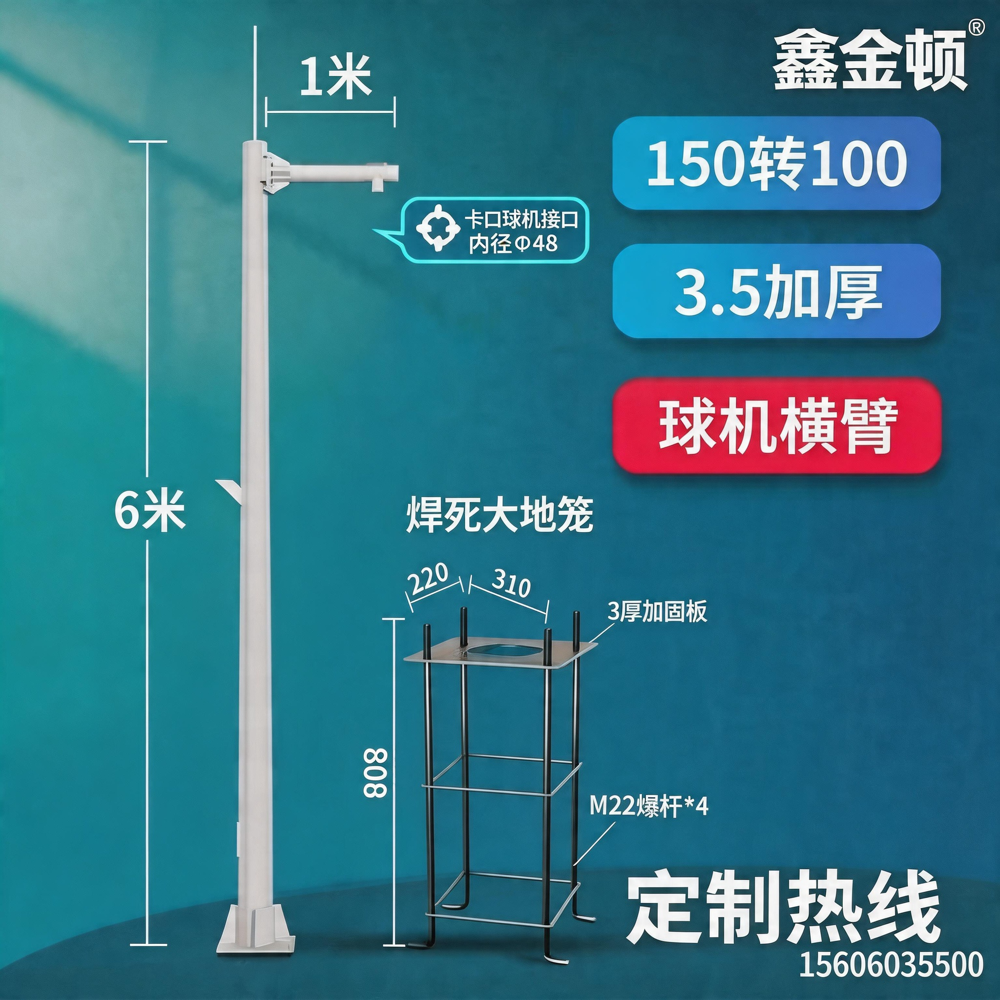
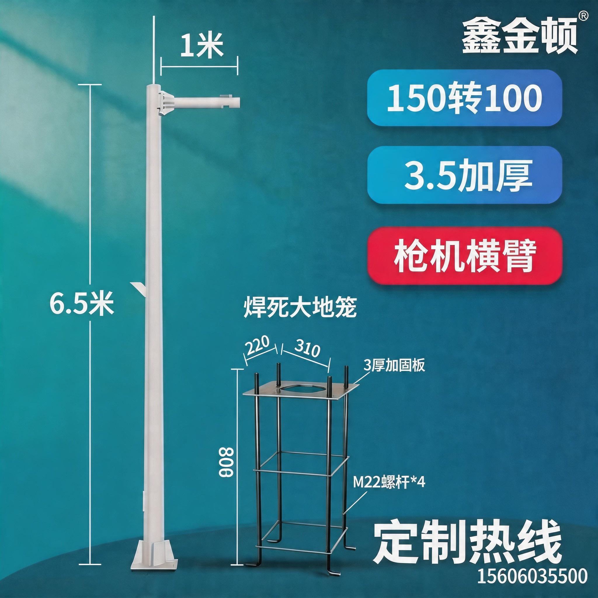

监控立杆 | 对讲立柱 | 交通设施杆件 | 智慧综合杆

SHLZ-A01
SHLZ-A04
SHLZ-A06
SHLZ-A10
4米 枪机
4.5米 球机
5米 枪机
6米 球机
6.5米 枪机| 产品名称 | 型号/规格 | 核心参数 | 适用场景 | 产品简介（可直接复制） |
|---|---|---|---|---|
| 📹 一、监控立杆系列 | ||||
| 单臂监控立杆 | 3米 / 4米 / 5米 / 6米 |
管径：76mm/89mm/114mm 壁厚：3.0mm/4.0mm 材质：Q235热镀锌钢 横臂：0.5m / 1.0m / 1.5m可选 地笼：配套预埋地笼 |
小区门口、停车场、道路路口、工厂园区 | 【产品简介】本款单臂监控立杆采用Q235优质钢材，热镀锌防腐处理，杆体壁厚3.0mm以上，表面光洁无毛刺。横臂可根据需求定制0.5m~1.5m，搭配枪机/球机均适用。使用寿命10年以上，适合小区、停车场、工厂园区等户外监控安装。 |
| 双臂监控立杆 | 4米 / 5米 / 6米 |
管径：114mm/133mm 壁厚：4.0mm 材质：Q235热镀锌钢 双横臂：各0.5m~1.5m可选 承重：≥30kg |
主干道路、十字路口、大型停车场 | 【产品简介】双臂款可同时搭载2台摄像头，最大覆盖范围更广，适合十字路口或大型广场多角度监控需求。杆体承重≥30kg，搭配防雷接地措施，稳固耐用。 |
| 悬臂监控杆（L型杆） | 5米 / 6米 / 7米 |
杆体：圆管114mm~140mm 悬臂：2m~4m 仰角：0°~15°可调 材质：Q235热镀锌 配套：手孔盒、引线管 |
公路、高速路口、隧道口 | 【产品简介】L型悬臂杆专为道路中心监控设计，悬臂长度可定制2~4m，内置穿线管，安装布线一体化。杆体经热镀锌处理，适应南方高湿、高盐雾环境，使用寿命15年以上。 |
| 🔔 二、对讲立柱系列 | ||||
| 不锈钢对讲立柱 | 标准款 / 加高款 |
材质：304不锈钢 高度：1100mm / 1200mm 截面：100×100mm 表面：拉丝+磨砂处理 适配：海康、大华、立林、安居宝 |
小区门口机、楼栋单元门、别墅围墙 | 【产品简介】本款立柱采用304不锈钢整体成型，高度1100~1200mm，拉丝磨砂表面处理，美观耐腐蚀。内部空间充裕，可容纳走线穿管。兼容市面主流品牌门口主机（海康/大华/立林/安居宝等），安装简便。 |
| 碳钢烤漆对讲立柱 | 单联 / 双联 / 三联 |
材质：Q235钢板 厚度：1.5mm 表面：磷化+静电喷涂 颜色：银灰色/香槟金/纯白可选 承重面板：可承载2~3台主机 |
小区、写字楼、商业综合体、公寓 | 【产品简介】碳钢烤漆款立柱价格实惠，颜色多样，可根据项目风格定制颜色。双联/三联款可安装多台对讲主机，适合多单元集中门禁系统使用。出厂前100%通过防腐检验，适合室外长期使用。 |
| 铝合金对讲立柱 | 标准款 |
材质：6063-T5铝合金型材 壁厚：2.5mm 表面：阳极氧化处理 高度：1100mm 接线口：底部防水接线区 |
高端住宅、别墅、商务楼宇 | 【产品简介】铝合金立柱采用6063-T5型材，轻量化设计，表面经阳极氧化处理，防紫外线、不褪色。底部设有专用防水接线区域，安装防水性能优越，适合高档小区或别墅使用。 |
| 🚦 三、交通设施杆件系列 | ||||
| 交通信号灯杆 | 单悬臂 / 双悬臂 / 八角杆 |
管径：168mm~273mm 壁厚：5.0mm~8.0mm 高度：6m / 8m / 10m 材质：Q345B热镀锌 配套：走线槽、手孔门 |
城市路口信号灯安装、国道省道 | 【产品简介】信号灯杆采用Q345B高强度钢，壁厚5mm以上，热镀锌防腐，符合GB/T标准。悬臂可定制2m~6m，内置多路穿线管，适配各品牌信号灯控制器。适用于城市路口、国道、快速路。 |
| 道路标志牌杆 | F型杆 / T型杆 / 悬臂式 |
管径：114mm~168mm 壁厚：4.0mm 高度：4m / 5m / 6m 材质：Q235热镀锌 板面：铝板反光标志牌 |
道路指示牌、限速标志、禁止标志 | 【产品简介】标志牌杆符合《道路交通标志和标线》国家标准，采用热镀锌钢管，稳固耐用。可按设计图纸定制F型、T型或悬臂式，搭配铝板反光标志牌，满足各类道路安全标识需求。 |
| 龙门架（门架） | 跨度4m~20m定制 |
主梁：无缝钢管/箱型梁 立柱：Q345B 跨度：4m~20m 高度：4m~8m 表面：热镀锌+氟碳漆 |
高速公路门架、隧道标识、限高龙门 | 【产品简介】龙门架结构由厂家工程师按实际跨度进行力学计算，确保强度符合道路设计规范。主梁采用箱型截面，抗扭刚度强，适用于高速公路ETC门架、限高提示门架等场景。 |
| 🌆 四、智慧综合杆系列 | ||||
| 多功能智慧综合杆 | 标准款 / 豪华款 |
高度：8m~12m 功能模块：监控摄像头+照明+广播+充电桩接口 通信：预留5G基站挂载接口 材质：Q345B热镀锌 防护等级：IP65 |
智慧园区、智慧社区、智慧城市道路 | 【产品简介】智慧综合杆集多种城市功能于一体，一杆承载监控、路灯、广播、充电桩等多项设施，有效减少道路杆件数量，美化城市景观。预留5G基站挂载接口，满足智慧城市基础设施升级需求。 |
| 🔩 五、五金配件系列 | ||||
| 立杆预埋地笼 | 通用款 / 加强款 |
规格：300×300×800mm（标准） 螺栓：M20×600热镀锌地脚螺栓×4 材质：Q235热轧钢筋笼 混凝土厚度要求：≥500mm |
各类立杆基础预埋 | 【产品简介】预埋地笼配套立杆使用，Q235钢筋焊接成型，热镀锌处理防腐。4条地脚螺栓精确定位，安装时对准模板浇筑即可，操作简便，确保立杆基础牢固。 |
| 横臂摄像机支架 | 单孔 / 双孔 / 三孔横臂 |
长度：0.5m / 1.0m / 1.5m / 2.0m 管径：60mm 壁厚：2.5mm 材质：热镀锌钢 仰角：0°~15°可调 |
立杆顶部摄像机安装 | 【产品简介】横臂支架与立杆配套使用，尺寸多样，适配主流枪机和球机安装。仰角可在0°~15°范围内调节，帮助安装人员快速对准监控角度，安装孔位标准化，开箱即装。 |
| 抱箍/抱杆支架 | 适配管径76~168mm |
材质：304不锈钢 / Q235热镀锌 适配杆径：76mm~168mm 螺栓：M10不锈钢 承重：≥20kg |
电线杆、灯杆补充安装摄像头 | 【产品简介】抱杆支架可将摄像机固定在现有电线杆或灯杆上，免打孔，安装快捷。提供不锈钢和镀锌两种材质，适配76mm~168mm杆径，满足各类户外补装需求。 |
| 防水手孔盒 | 小号 / 中号 / 大号 |
尺寸：100×70mm / 150×100mm / 200×130mm 材质：Q235热镀锌板，厚2.0mm 防护等级：IP54 锁具：配套防盗合页锁 |
立杆杆体检修接线 | 【产品简介】手孔盒焊接于杆体指定位置，提供杆内布线检修入口。热镀锌处理抗腐蚀，配套防盗锁具，防止线缆被破坏。出厂前经水密性检测，防护等级IP54以上。 |
💡 如需补充具体产品型号，请把淘宝店内产品截图发给我，我可以帮你精确匹配参数。